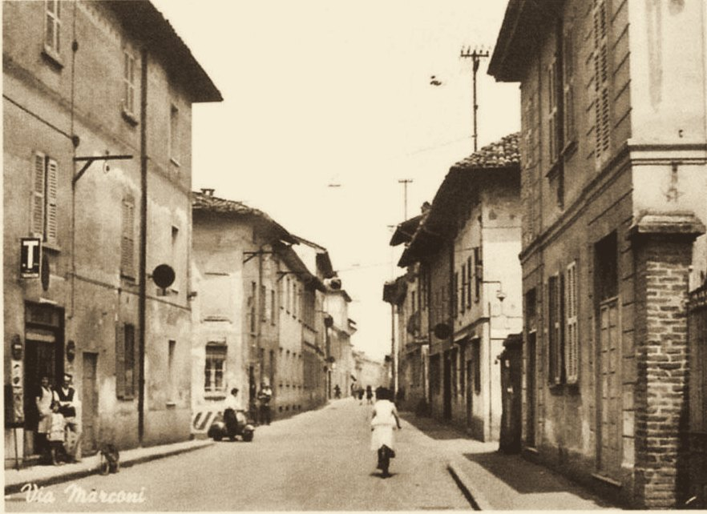
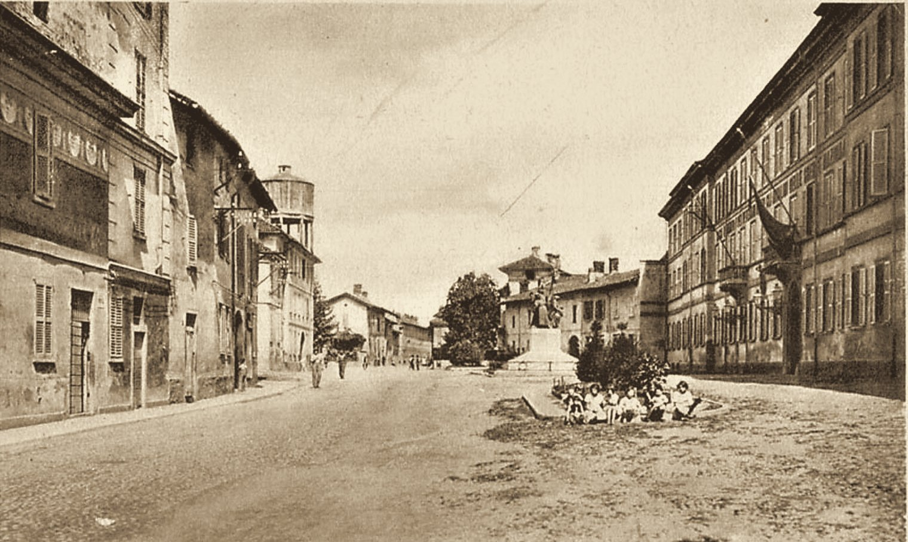
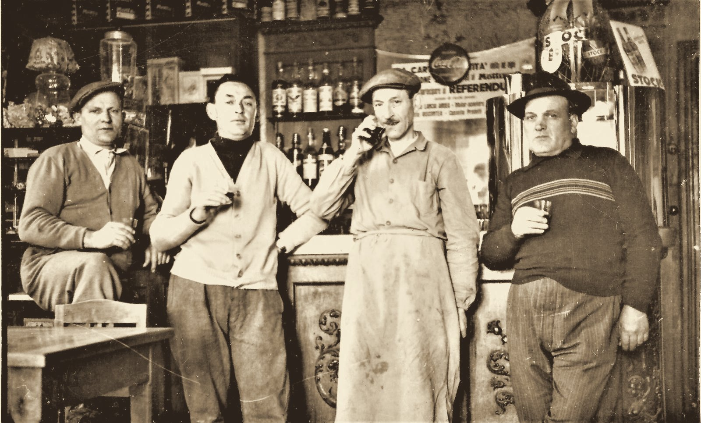
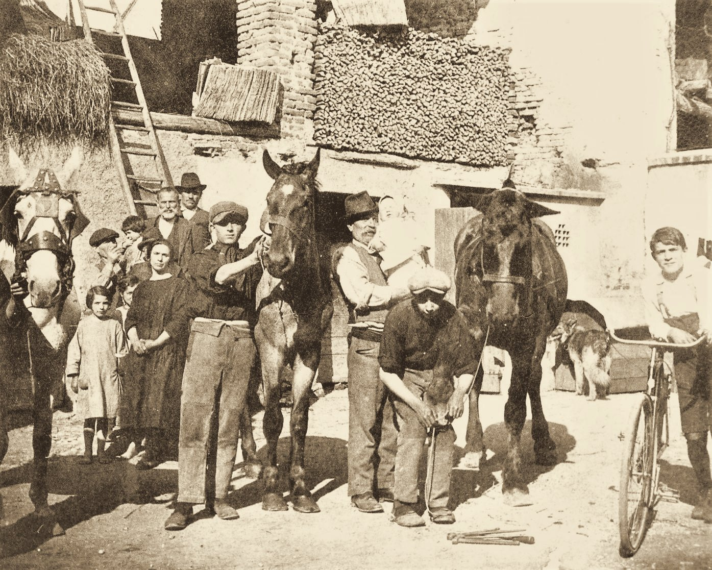
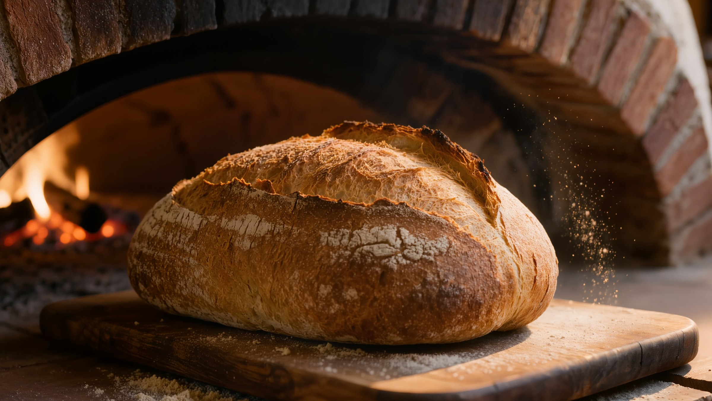

In Via Marconi 5 c'è sempre stato un ristorante, e il Sabiìti ne è stato un punto di riferimento per Turate.
Oggi la tradizione del luogo continua come La Corte dei Sabiìti, con una squadra tutta rinnovata.
Il nome resta. La cucina ricomincia.

Questa è Via Marconi in una vecchia cartolina. Qui la tradizione del luogo è di casa, e da qui riparte la nostra storia.



In Lombardia la corte era il cuore della cascina: il cortile attorno a cui si cucinava, si faceva il pane, ci si sedeva a mangiare insieme.
La Corte dei Sabiìti è una trattoria che riparte da lì: cucina di casa, piatti della tradizione lombarda, un menù che segue le settimane e le stagioni.
Si mangia semplice, si mangia bene, ci si ferma un po'.
La pizza la lasciamo a chi la fa di mestiere. Le nostre cotture a legna servono per altro: il pane, i grissini, gli arrosti, le patate.
Si accende quando serve, perché pane e arrosti hanno i loro tempi.

Una trattoria piccola. Sono sempre gli stessi: alla seconda visita chi vi accoglie vi riconosce già.
Per la sera e per le settimane a tema consigliamo di prenotare. The Fork, telefono o WhatsApp.